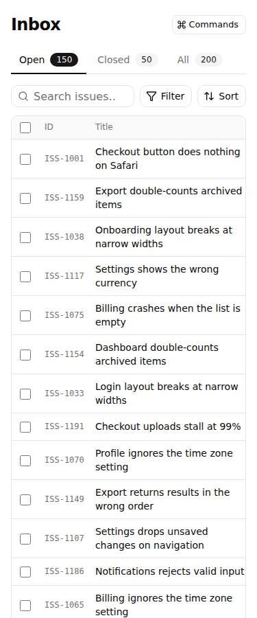
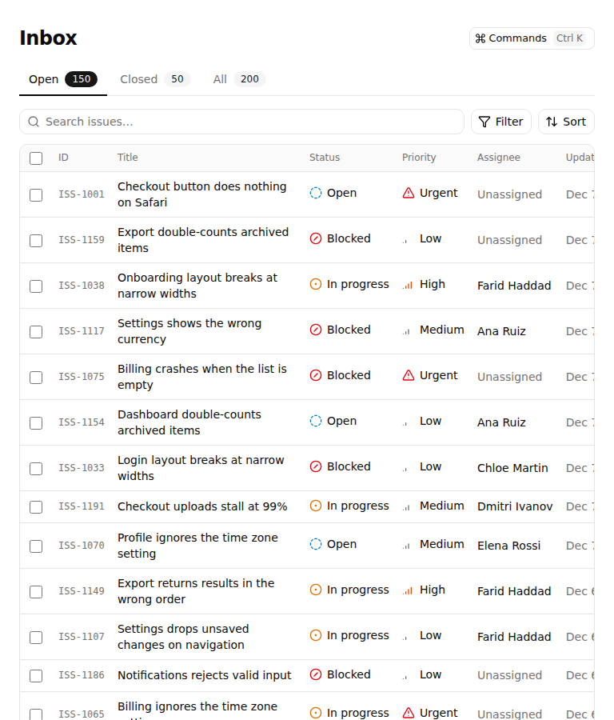
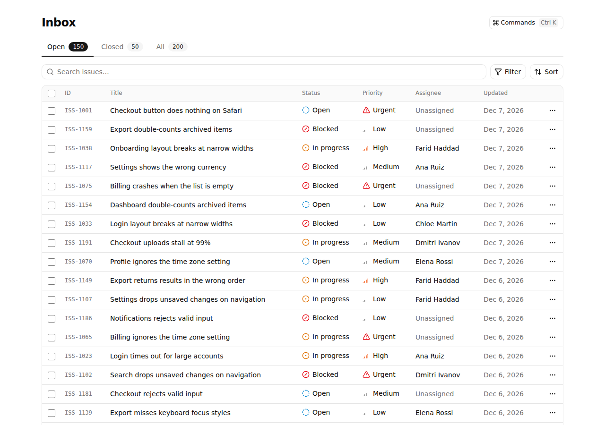
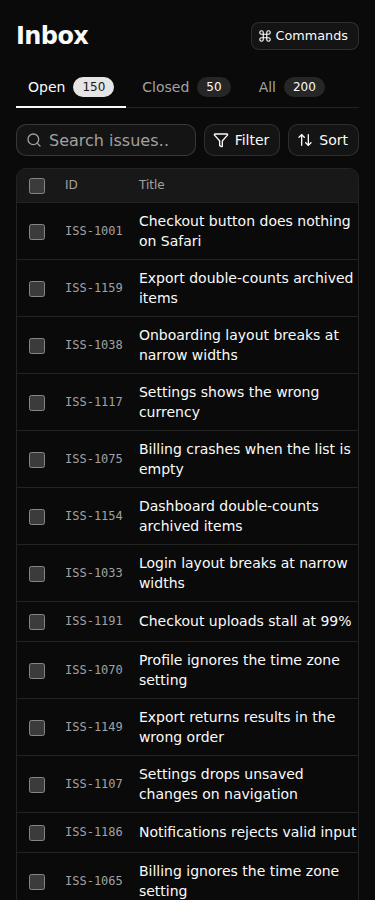
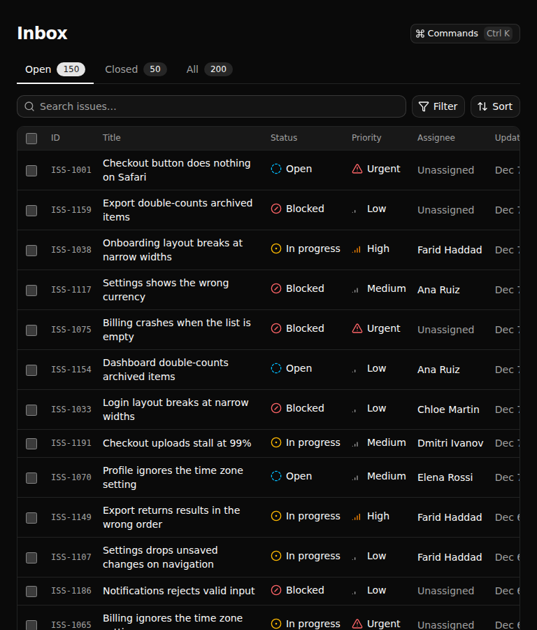
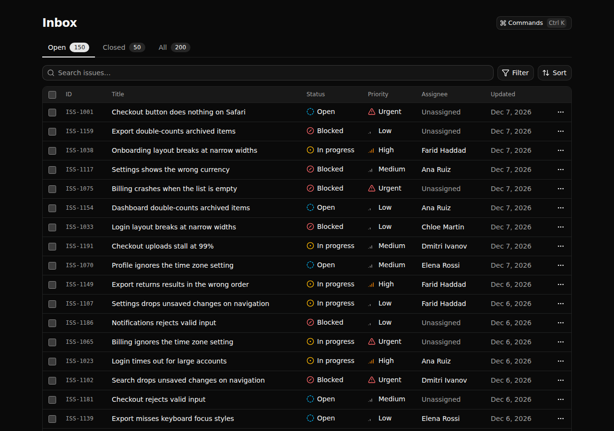

Quality
- Build
- yes
- Typecheck
- yes
- Keyboard-only flow
- yes
- Axe rules violated
- 4
- Console errors at load
- 0
Time and process
- Wall clock
- 15.1 min
- Model time
- 13.1 min
- Tool time
- 2.0 min
- Turns
- 45
- Tool calls
- 44
- Builds (failed)
- 4 (1)
- Vendor skill used
- yes
Tokens and cost
- Cost
- $3.313
- Input (uncached)
- 70
- Cache read
- 3,113,381
- Cache write
- 122,759
- Output
- 85,420
claude-code total_cost_usd
Output
- Code lines added
- 2,290
- Bundle (gzip)
- 108.5 KB
- Dependencies added
- none
claude-opus-5-5, CLI 2.1.325; shadcn 4.23.0, @base-ui/react 1.9.0, lucide-react 1.73.0.
Prompt
The complete prompt the agent received, verbatim (1,766 words). Both models got exactly the same text for this task; the shadcn/ui and UI SDK versions differ only in the Stack paragraph. Raw markdown
Show the full prompt
You are working in a frontend project in the current directory. Complete the task below on your own in this one session: nobody will answer questions or give feedback, so make reasonable decisions and finish. When you are done, the project must build with npm run build.
Stack
Vite + React 19 + TypeScript + Tailwind CSS v4, with shadcn/ui already initialised (components.json). Add shadcn/ui components with its CLI as you need them. See AGENTS.md / CLAUDE.md for project notes.
Rules
- UI only. There is no real backend, server or authentication. Use the mock API in
src/mock/api.tsfor all data; don't edit anything insrc/mock/. If you need something it doesn't cover, add your own in-memory placeholder in a separate file. - Build the whole task as the app's single page (replace
src/App.tsx). No routing is needed. - You may add utility libraries (for example drag-and-drop, virtualization, positioning or table-state helpers). Don't add a ready-made implementation of the widget you are asked to build (for example a data grid or spreadsheet component, a node-graph or flow-canvas library, or a calendar/scheduler suite).
- It must work in light and dark mode (see the dark mode note in AGENTS.md / CLAUDE.md) and at mobile width (375 px) as well as desktop.
- Follow the accessibility requirements in the task, including any accessibility contract: exact roles, accessible names and attributes are part of the task.
- Keep
base: './'invite.config.tsso the build works from a subpath.
Task: Issue triage inbox
Build a single-page issue triage inbox. Data comes from the mock API in src/mock/api.ts (listIssues, getIssue, updateIssues, addComment, listPeople, plus STATUSES, PRIORITIES, PRIORITY_RANK, PEOPLE, CURRENT_USER_ID). listIssues() returns all 200 issues; filter, sort and paginate on the client.
Layout
- A heading "Inbox".
- A tab list with tabs "Open" (status is not Done), "Closed" (status Done) and "All". Each tab's name starts with that word and may be followed by a count. "Open" is selected initially.
- A toolbar with a search field named "Search issues", a "Filter" button, and a "Sort" button.
- A table named "Issues" (native
<table>or ARIA table/grid roles) with a header row and one row per issue, 25 rows per page. Columns: a selection checkbox, ID, Title, Status, Priority, Assignee ("Unassigned" when nobody), Updated, and a row actions button.- The selection checkbox in each row is named "Select <issue id>" (for example "Select ISS-1001").
- The title is a button or link whose accessible name is the issue title; activating it opens the detail drawer.
- The row actions button is named "Actions for <issue id>".
- The header row has a checkbox named "Select all on this page".
- Pagination below the table: text "Page X of Y", and buttons "Previous page" and "Next page" (disabled at the ends).
- While issues load, show "Loading issues…". If loading fails, show "Couldn't load issues" and a "Retry" button. When no issue matches, show "No issues match".
Viewing
- Search filters by case-insensitive substring of title or ID.
- Filter: the "Filter" button opens a non-modal popover dialog named "Filters" with three groups of checkboxes: "Status" (the four statuses), "Priority" (the four priorities) and "Assignee" (every person plus "Unassigned"). Filtering is applied as boxes change: options within a group are OR-ed, groups are AND-ed. While any box is checked, the Filter button's name includes the number of checked boxes, like "Filter (2)". A "Clear filters" button in the popover unchecks everything. Escape or clicking outside closes the popover and returns focus to "Filter".
- Sort: the "Sort" button opens a menu of radio items (
menuitemradio, with the current one checked): "Updated (newest first)" (the default), "Updated (oldest first)", "Priority (highest first)" and "Title (A–Z)". Priority ties are ordered by issue ID ascending. - Changing tab, search, filters or sort returns to page 1.
Selection and actions
- Selection persists across pages within the current view. Changing tab, search or filters clears it. Issues that leave the current view (for example after a status change) leave the selection. "Select all on this page" checks every row on the page; it is checked when all rows on the page are selected and mixed (
aria-checked="mixed"or the indeterminate state) when some are. - While one or more issues are selected, a toolbar named "Bulk actions" shows "N selected" and the buttons "Set status", "Set priority", "Assign" (each opens a menu of choices) and "Clear selection". A bulk action applies to every selected issue in one
updateIssuescall. - Actions are the same everywhere: set status (four statuses), set priority (four priorities), assign (each person, or "Unassigned").
- Row actions menu ("Actions for <id>") and the row context menu (right-click on a row, or Shift+F10 / the ContextMenu key while focus is on the row) contain the same items: "Open details", then submenus "Set status", "Set priority" and "Assign" holding the choices. They act on that row's issue only. Submenus open with ArrowRight, Enter or hover and close with ArrowLeft or Escape, returning focus to the parent item. The current value in each submenu is marked as checked.
- Command palette: Ctrl+K (Cmd+K on macOS) opens a modal dialog named "Command palette" with a text field named "Search commands" and a list of commands as options, filtered by case-insensitive substring as you type. ArrowUp/ArrowDown move the active option, Enter runs it, Escape closes the palette. Ctrl/Cmd+K toggles it. Commands: "Set status: <status>", "Set priority: <priority>", "Assign to <person name>", "Unassign", "Go to Open", "Go to Closed", "Go to All", "Clear filters". Issue commands act on the issue open in the drawer if there is one, otherwise on the selected issues, otherwise on the row that has focus; when there is no target they are not shown.
- Updates are optimistic: the UI changes immediately and calls
updateIssues. On success, announce "Updated 1 issue" / "Updated N issues" in a polite live region. If the call fails, revert the change and show an alert (role="alert") saying "Couldn't update issues".
Detail drawer
- Opening an issue shows a modal side drawer (
role="dialog") whose accessible name is the issue title. It shows the ID, status, priority, assignee, labels, description and comments (loaded withgetIssue). - It has selects (or comboboxes) named "Status", "Priority" and "Assignee"; changing one updates the issue right away.
- A "Comments" section lists comments, with a text field named "Add a comment" and a "Comment" button that calls
addCommentand shows the new comment. - A "More actions" menu button in the drawer opens a menu with the "Set status", "Set priority" and "Assign" submenus.
- A "Close" button closes it. Escape closes it when no menu or palette is open on top.
- On screens narrower than 640 px the drawer covers the whole viewport. On wider screens it is a panel on the right, no wider than 50% of the viewport (and at least 360 px).
Focus and layering
- Overlays stack: a menu opened inside the drawer appears above it; the palette opened while the drawer is open appears above the drawer. Escape closes only the topmost overlay.
- When an overlay closes, focus returns to where it came from: a menu to its trigger, a context menu to the row it was opened on, the palette to the element that had focus before it opened (inside the drawer if the drawer is open), and the drawer to the element that opened it (the title, or the row actions button if opened via "Open details").
Keyboard shortcuts
- Ctrl/Cmd+K: toggle the command palette. Works everywhere, including in text fields.
/: focus "Search issues".j/k: move focus to the next / previous row in the table (the firstjfocuses the first row). Focus goes to the row element itself or to an element inside that row.x: toggle selection of the focused row.- Enter on a focused row: open its drawer.
- Single-key shortcuts must not fire while typing in a text field, textarea, select or contenteditable element.
Responsive and themes
At 375 px wide the page has no horizontal scrolling (the table may scroll horizontally inside its own container). Everything must look right and remain readable in light and dark mode.
Acceptance criteria
- While loading, "Loading issues…" is shown, then the "Issues" table with 25 rows. A failed load shows "Couldn't load issues"; "Retry" loads the issues.
- Tabs "Open", "Closed" and "All" show the right issues; the tab list follows the ARIA tabs keyboard pattern.
- Pagination shows "Page X of Y" and pages with "Next page" / "Previous page", which are disabled at the ends.
- Search filters by title or ID;
/focuses the search field. - The "Filters" popover filters by status, priority and assignee; the Filter button's name shows the count; Escape closes it and returns focus to "Filter"; "Clear filters" resets.
- The "Sort" menu uses checked radio items, works from the keyboard and sorts correctly.
- Row checkboxes and "Select all on this page" (including the mixed state) work; the "Bulk actions" toolbar shows "N selected" and applies a status to all selected issues in one
updateIssuescall. - The row actions menu has "Open details" and the three submenus; submenus work with ArrowRight/ArrowLeft; choosing a value updates the issue; Escape returns focus to the trigger.
- Right-click and Shift+F10 open a context menu with the same items; Escape closes it and returns focus to the row.
- Ctrl/Cmd+K opens the "Command palette"; typing filters commands; Enter runs the active command; Escape closes it and returns focus.
- The same status change made from the row menu, the context menu and the palette produces the same
updateIssuescall and the same visible result. - The drawer opens from the title and from "Open details", is named by the issue title, edits status through "Status", adds a comment, and on Escape closes and returns focus to its trigger.
- Inside the drawer, the "More actions" menu and the palette stack above it; each Escape closes only the topmost overlay and focus returns correctly; a palette command applies to the drawer's issue.
- Single-key shortcuts do nothing while typing in a text field, while Ctrl/Cmd+K still works;
j,k,xand Enter work on rows. - A failed update reverts and shows "Couldn't update issues"; a successful update announces "Updated N issue(s)".
- At 375 px wide the drawer covers the viewport and the page doesn't scroll horizontally; light and dark mode both render readable content.
Screenshots
Taken by the evaluator at three widths in light and dark mode.





